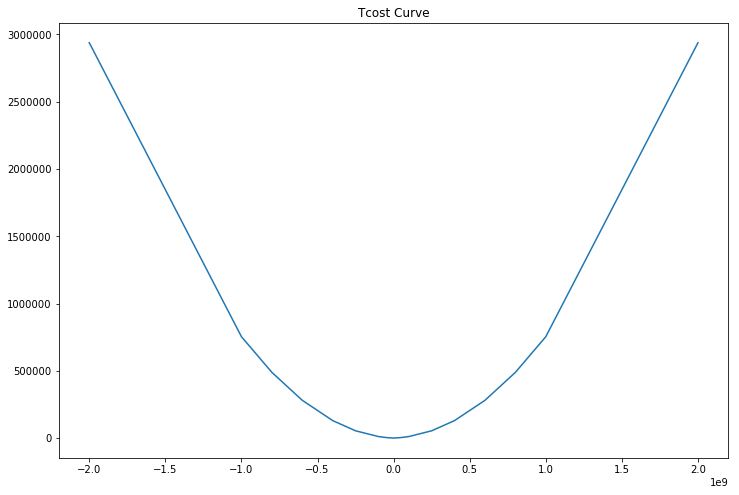

I recently played around with gurobipy, the excellent python wrapper to Gurobi, and wanted to summarize my experience. Gurobi is a commercial solver but has a free restricted licenses for academics and online coursework.
First you need to install gurobipy, download gurobi from http://www.gurobi.com/downloads/gurobi-optimizer untar to /opt
Append the following to your .bashrc file, where gurobi701 may vary depending on the version of gurobi you installed
export GUROBI_HOME="/opt/gurobi701/linux64"
export PATH="${PATH}:${GUROBI_HOME}/bin"
export LD_LIBRARY_PATH="${LD_LIBRARY_PATH}:${GUROBI_HOME}/lib"
Download a license from
https://user.gurobi.com/download/licenses/free-online
Install the python library using
cd /opt/gurobi701/linux64
python setup.py install
Hello world example
from gurobipy import *
m = Model()
m.setParam('OutputFlag', True)
x = m.addVar(name='x')
y = m.addVar(name='y')
m.setObjective(3*x - y, GRB.MAXIMIZE)
m.addConstr(x + y <= 1, "c1")
m.update()
m.optimize()
for v in m.getVars():
print('%s %s' % (v.VarName, v.X))
print('Obj: %s' % m.ObjVal)
Parameter OutputFlag unchanged
Value: 1 Min: 0 Max: 1 Default: 1
Optimize a model with 1 rows, 2 columns and 2 nonzeros
Coefficient statistics:
Matrix range [1e+00, 1e+00]
Objective range [1e+00, 3e+00]
Bounds range [0e+00, 0e+00]
RHS range [1e+00, 1e+00]
Presolve removed 1 rows and 2 columns
Presolve time: 0.01s
Presolve: All rows and columns removed
Iteration Objective Primal Inf. Dual Inf. Time
0 3.0000000e+00 0.000000e+00 0.000000e+00 0s
Solved in 0 iterations and 0.01 seconds
Optimal objective 3.000000000e+00
x 1.0
y 0.0
Obj: 3.0
Mean Variance with Piecewise Linear Tcost
from gurobipy import *
import numpy as np
# Objective function
#
# max h'mu - h'Sh - (f(h1) + f(h2))
#
# where f() are piecewise linear
def run_opti(current_holdings, alphas, covariance, tcosts=None, risk_aversion=1):
m = Model('portfolio')
m.setParam('OutputFlag', False)
# Create variables
lb = -1e9
ub = 1e9
holdings = pd.Series(m.addVars(alphas.index, lb=lb, ub=ub))
# Integrate new variables
var_obj = -risk_aversion * covariance.dot(holdings).dot(holdings)
if tcosts is not None:
# setting piecewise linear objectives overrides other linear objectives
# so include alpha in pwl
m.setObjective(var_obj, GRB.MAXIMIZE)
for ast in holdings.index:
tc = tcosts.trade_cost
centered_notional = list(tcosts.notional - current_holdings.loc[ast])
tcost_and_alpha = [-tcn + alphas.loc[ast] * ntnl for tcn, ntnl in zip(tc, centered_notional)]
m.setPWLObj(holdings.loc[ast], centered_notional, tcost_and_alpha)
else:
m.setObjective(alphas.dot(holdings) + var_obj, GRB.MAXIMIZE)
m.update()
m.optimize()
if m.Status == GRB.OPTIMAL:
print('Solution is optimal')
else:
print('Solution is not optimal')
for v in m.getVars():
print('%s %g' % (v.VarName, v.X))
print('Obj: %g' % m.ObjVal)
print('')
return holdings.apply(lambda x: x.X), m
# covariance matrix
# 0.01 0.0091
# 0.0091 0.0169
import pandas as pd
alphas = pd.Series((-3e-4, 5e-4), index=["A", "B"])
risk_aversion = 0.000000006
cov = pd.DataFrame([[0.01, 0.0091], [0.0091, 0.0169]], index=["A", "B"], columns=["A", "B"])
notional = [-2.0000e9, -1.0000e9, -0.8000e9, -0.6000e9, -0.4000e9, -0.2500e9,
-0.1000e9, -0.0500e9, -0.0250e9, -0.0100e9, -0.0010e9, 0, 0.0010e9,
0.0100e9, 0.0250e9, 0.0500e9, 0.1000e9, 0.2500e9, 0.4000e9,
0.6000e9, 0.8000e9, 1.0000e9, 2.0000e9]
trade_cost = [2.938964e6, 0.753364e6, 0.488104e6, 0.280144e6, 0.129472e6,
0.053766e6, 0.011007e6, 0.003751e6, 0.001435e6, 0.000465e6,
0.000037e6, 0, 0.000037e6, 0.000465e6, 0.001435e6, 0.003751e6,
0.011007e6, 0.053766e6, 0.129472e6, 0.280144e6, 0.488104e6,
0.753364e6, 2.938964e6]
tcosts = pd.DataFrame({"notional": notional, "trade_cost": trade_cost})
current_hlds = pd.Series(0, index=['A', 'B'])
import matplotlib.pyplot as plt
plt.figure(figsize=(12,8))
plt.plot(tcosts.notional, tcosts.trade_cost)
plt.title("Tcost Curve")
plt.show()

Inspecting the results with and without accounting for tcosts, you can see this is having the desired effect of slowing trading
ntc_hlds, _ = run_opti(current_hlds, alphas, cov, risk_aversion=risk_aversion)
ntc_hlds.apply(lambda x: '${:,.2f}'.format(x))
Solution is optimal
C0 -9.30116e+06
C1 7.4738e+06
Obj: 3263.62
A $-9,301,156.36
B $7,473,798.20
dtype: object
tc_hlds, model = run_opti(current_hlds, alphas, cov, tcosts, risk_aversion=risk_aversion)
tc_hlds.apply(lambda x: '${:,.2f}'.format(x))
Solution is optimal
C0 -8.10569e+06
C1 6.59559e+06
Obj: 2536.3
A $-8,105,692.42
B $6,595,592.00
dtype: object
If you are having issues, a useful trick for debugging is to inspect the model by writing it out to an lp format
import tempfile
fn = tempfile.mktemp(".lp")
model.write(fn)
!cat $fn
\ Model portfolio
\ LP format - for model browsing. Use MPS format to capture full model detail.
Maximize
__pwl(C0) + __pwl(C1) + [ - 1.2e-10 C0 ^2 - 2.184e-10 C0 * C1
- 2.028e-10 C1 ^2 ] / 2
Subject To
Bounds
-1e+09 <= C0 <= 1e+09
-1e+09 <= C1 <= 1e+09
PWLObj
C0: (-2e+09, -2.338964e+06) (-1e+09, -453364) (-8e+08, -248104)
(-6e+08, -100144) (-4e+08, -9472) (-2.5e+08, 21234) (-1e+08, 18993)
(-5e+07, 11249) (-2.5e+07, 6065) (-1e+07, 2535) (-1e+06, 263) (0, -0)
(1e+06, -337) (1e+07, -3465) (2.5e+07, -8935) (5e+07, -18751)
(1e+08, -41007) (2.5e+08, -128766) (4e+08, -249472) (6e+08, -460144)
(8e+08, -728104) (1e+09, -1.053364e+06) (2e+09, -3.538964e+06)
C1: (-2e+09, -3.938964e+06) (-1e+09, -1.253364e+06) (-8e+08, -888104)
(-6e+08, -580144) (-4e+08, -329472) (-2.5e+08, -178766) (-1e+08, -61007)
(-5e+07, -28751) (-2.5e+07, -13935) (-1e+07, -5465) (-1e+06, -537)
(0, 0) (1e+06, 463) (1e+07, 4535) (2.5e+07, 11065) (5e+07, 21249)
(1e+08, 38993) (2.5e+08, 71234) (4e+08, 70528) (6e+08, 19856)
(8e+08, -88104) (1e+09, -253364) (2e+09, -1.938964e+06)
End